방송통신산업기사 (2006-03-05 기출문제)
1과목: 디지털 전자회로
1. 다음 중 LC 발진기에서 일어나는 현상이 아닌 것은?
- 인입현상
- 기생진동
- 자외선현상
- Blocking 발진
(정답률: 알수없음)

2. 토글 플립플롭(Toggle-F/F)을 2단 직렬 연결한 후 입력에 4[kHz] 펄스를 인가하면 출력은?
- 16[kHz]
- 8[kHz]
- 2[kHz]
- 1[kHz]
(정답률: 알수없음)
3. 결합상태가 DC(직류)로 구성된 멀티바이브레이터는?
- 무안정 멀티바이브레이터
- 단안정 멀티바이브레이터
- 쌍안정 멀티바이브레이터
- 무단안정 멀티바이브레이터
(정답률: 알수없음)
4. 반송파전압 eC = ECcos(ωCt+θ) 를 신호전압 eCCcosωCt로 진폭변조시 피변조파의 상측파대의 진폭은? (단, ma: 변조도)
- ωC + ωS
- maㆍEC/2
- ωC - ωS
- maㆍEC
(정답률: 알수없음)
5. 슈미트 트리거(Schmitt trigger) 회로의 용도 설명 중 틀린 것은?
- 구형파 펄스 발생회로로 사용된다.
- 임의의 파형에서 그 크기에 해당하는 펄스폭의 구형파를 얻기 위해서 사용된다.
- A-D 변환회로로 사용된다.
- D-A 변환회로로 사용된다.
(정답률: 알수없음)
6. 다음 회로에서 R1 = 1[MΩ], R2 = 4[MΩ]일 때 전압증폭도 Av는 얼마나 되는가? (단, 연산증폭기는 이상적이다.)
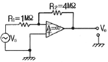
- -1
- -2
- -3
- -4
(정답률: 알수없음)
7. 다음 논리식 중 좌우항의 관계가 틀린 것은?
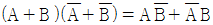
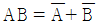
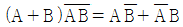
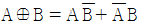
(정답률: 알수없음)
8. 그림과 같은 전파정류회로의 각 다이오드에 걸리는 최대 역전압의 크기는 약 얼마인가? (단, 100V 는 상용전압이고 n1 = n2 이다.)
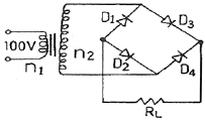
- 100[V]
- 141[V]
- 230[V]
- 282[V]
(정답률: 알수없음)
9. D 플립-플롭을 이용하여 그림과 같은 회로를 구성하고, 클럭(clk) 단자에 5[kHz] 클럭 펄스를 인가하였다. 동작 시작 단계에서 Q출력을 +5[kHz]로 하였다면 출력은?
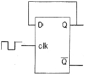
- 10[kHz]
- 2.5[kHz]
- 5[kHz]
- 5[V] DC
(정답률: 알수없음)
10. 전가산기의 출력(S : 합, Co : 캐리출력)에서 S = Co가 되기 위한 입력 A, B, Ci(캐리입력) 조건은?
- A = 0, B = 0, Ci = 1 또는 A = 1, B = 1, Ci = 1
- A = 0, B = 0, Ci = 0 또는 A = 1, B = 1, Ci = 1
- A = 1, B = 1, Ci = 0 또는 A = 1, B = 1, Ci = 1
- A = 0, B = 0, Ci = 0 또는 A = 0, B = 0, Ci = 1
(정답률: 알수없음)
11. 다음 중 디지털변조방식에 속하지 않는 것은?
- 위상변조(PM)
- 펄스부호변조(PCM)
- 적응델타변조(ADM)
- 차분펄스부호변조(DPCM)
(정답률: 알수없음)
12. 전압이득이 50인 저주파 증폭기가 약10[%] 정도의 왜율을 가지고 있다. 이를 2[%] 정도로 개선하기 위하여 걸어 주어야하는 부궤환율 β은 얼마 이어야 하는가?
- 10
- 4
- 0.02
- 0.08
(정답률: 알수없음)
13. J-K 플립플롭에서 Jn = 0, Kn = 1일 때 클록펄스가 1 상태라면 Qn+1 의 출력상태는?
- 부정
- 0
- 1
- 반전
(정답률: 알수없음)
14. 실리콘 제어정류소자(SCR)의 전류-전압 특성곡선은?
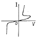
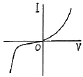
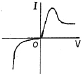
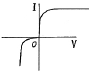
(정답률: 알수없음)
15. JK 플립플롭을 이용하여 D형 플립플롭을 만들려면?
- J의 입력을 인버터를 통해 K에 연결한다.
- J와 K를 동일 입력으로 한다.
- Q의 입력을 J에 궤환시킨다.
- K의 입력을 J에 궤환시킨다.
(정답률: 알수없음)
16. 다음 불 대수의 정리 중 옳지 않은 것은?
- A + B = B + A
- A + BㆍC = (A + B)(A + C)
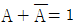
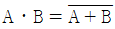
(정답률: 알수없음)
17. 그림에서 병렬공진회로의 공진주파수가 5[MHz]이다. 입력주파수가 5[MHz]일 때 컬렉터 전류는?
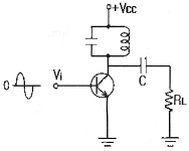
- 증가한다.
- 감소한다.
- 최대가 된다.
- 최소가 된다.
(정답률: 알수없음)
18. 에미터 접지 트랜지스터에서 동작점의 안정화를 위한 대책을 가장 적절하게 설명한 것은?
- 동작점의 베이스전류 IB 만 일정하게 한다.
- 전류 이득 β가 일정하게 한다.
- 동작점의 IC의 VCE의 값을 일정하게 한다.
- 역포화 전류 ICO가 일정한 값을 갖도록 한다.
(정답률: 알수없음)
19. 그림과 같은 에미터 저항을 가진 CE 증폭기에서 에미터 저항 RE의 가장 중요한 역할은 무엇인가?
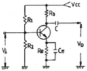
- S(안정계수)를 감소시켜 동작점이 안정된다.
- 주파수 대역을 증가시킨다.
- 바이어스 전압을 감소시킨다.
- 증폭회로의 출력을 증가시킨다.
(정답률: 알수없음)
20. LC 동조 발진기에 비해 수정 발진기의 특징으로 잘못 설명한 것은?
- 안정도가 높다.
- Q가 비교적 크다.
- 발진 주파수를 가변하기 어렵다.
- 저주파 발진기로 적합하다.
(정답률: 알수없음)
2과목: 방송통신 기기
21. 위성 DBS 중계기 안테나를 통해서 받는 전파는?
- 수평편파
- 수직편파
- 구형파
- 원형편파
(정답률: 알수없음)
22. TV 방송의 연주소에서 영상프로그램의 제작이나 송출시 사용하는 동기신호는 다음 가운데 어느 것을 Main으로 하는가?
- 카메라에서 발생한 동기 신호를 Main으로 한다.
- VTR에서 Play되는 동기 신호를 Main으로 한다.
- 중계차에서 보내오는 동기신호를 Main으로 한다.
- Sync Generator에서 발생한 신호를 Main으로 한다.
(정답률: 알수없음)
23. 영상신호를 발생시키기 위하여 주사를 하는 이유로 가장 타당한 것은?
- 텔레비전의 전송방식이 직렬방식이기 때문이다.
- 텔레비전 전송방식이 병렬방식이기 때문이다.
- 화질이 좋게 하기 위해서이다.
- 정보량을 축소하기 위해서이다.
(정답률: 알수없음)
24. 수퍼헤테로다인 수신기의 중간주파수(IF)를 높게 선정하였을 때 개선되는 것은?
- 근접 주파수 선택도
- 단일 조정(Tracking)
- 영상 주파수 선택도
- 강도 및 안정도
(정답률: 알수없음)
25. HDTV는 인간의 시각특성에 대한 보다 심도 깊은 연구 결과 화면의 가로:세로의 비율을 기존의 4 : 3에서 이것으로 결정하였다. 맞는 것은?
- 8 : 6
- 3 : 4
- 16 : 9
- 9 : 16
(정답률: 알수없음)
26. 스펙트럼 분석기(Spectrum Analyzer)의 용도로서 바람직하지 않은 것은?
- 안테나 패턴 측정
- FM편차 측정
- 전압 측정
- 변조증폭기의 동조
(정답률: 알수없음)
27. 오버슈트(Overshoot)란 입력파형에 대하여 출력파형이 규정값보다 넘어 화면 오른쪽 가장자리에 백색선이 발생하는 현상이다. 이의 원인으로 가장 타당한 것은?
- 영상신호용 증폭기의 과도특성이 나쁠 경우
- 편향회로의 동기가 맞지 않은 경우
- 카메라 장치의 동기신호발생장치가 고장인 경우
- 색신호 재생회로의 과부하가 발생한 경우
(정답률: 알수없음)
28. AM 송신기에서 사용하지 않는 회로는?
- 주파수 체배기
- 완충증폭기
- 발진기
- 주파수 변별회로
(정답률: 알수없음)
29. 다음은 잡음지수와 종합잡음지수에 대한 설명이다. 틀린 것은?
- 잡음지수 는
 로 정의된다.
로 정의된다. - 종합잡음지수는 최종 뒷단에 있는 종단 증폭기의 이득에 가장 큰 영향을 받는다.
- 종합잡음지수는 초단 증폭기의 잡음지수에 큰 영향을 받는다.
- 잡음지수가 적을수록 내부잡음의 발생이 적다는 것을 의미한다.
(정답률: 알수없음)
30. 다음 중 방송에 대한 정의를 올바르게 설명하지 않는 것은?
- 전송을 목적으로 하는 지상의 무선국을 이용하여 행하는 방송을 지상파 방송이라 한다.
- 인공위성의 중계기를 이용하여 행하는 방송을 위성방송이라 한다.
- 전송선로 설비를 이용하여 수신자에게 방송프로그램을 송신하는것을 유선 방송이라 한다.
- 인터넷상에서 네트워크을 통하여 방송 프로그램을 송신하는 것을 네트워크 방송이라 한다.
(정답률: 알수없음)
31. AM 송신기에 있어서 완충증폭기에 대한 설명으로 틀린것은?
- 발진부 바로 다음 단에 설치를 한다.
- 주로 C급 증폭방식을 채택한다.
- 부하의 변동을 방지한다.
- 발진주파수의 변동을 방지한다.
(정답률: 알수없음)
32. 위성방송용 지구국에 주로 사용되는 안테나는?
- Rhombic ANT
- 4 dipole ANT
- Parabola ANT
- Cassegrain ANT
(정답률: 알수없음)
33. CATV의 기본구성요소가 아닌 것은?
- 서비스 분배 전송로
- 교환장치
- 가입자 단말장치
- 헤드엔드
(정답률: 알수없음)
34. 방송 송신소에 대한 설명 중 가장 타당한 것은?
- 프로그램 제작 및 제작된 프로그램을 방송 위성국으로 송출하는 역할을 하는 곳
- 연주소로부터 프로그램을 전송 받아서 일반 수신자에게 방송 전파를 송신 역할을 하는 곳
- 연주소와 중계방송국(중계국)으로 구성된다.
- 방송국의 방송 프로그램을 중계ㆍ송신하여 방송국의 방송전파가 수신되지 않는 난시청 지역을 서비스하는 역할을 하는 곳
(정답률: 알수없음)
35. 다음 중 정지위성의 궤도는 대략 지구상공 몇 [km]인가?
- 약 1500[km]
- 약 25600[km]
- 약 36000[km]
- 약 30000[km]
(정답률: 알수없음)
36. 두 개의 색차신호를 반송파 억압 진폭 변조하여 휘도신호에 중첩시키는 TV 신호방식은?
- PAL 방식
- SECAM 방식
- MUSE 방식
- NTSC 방식
(정답률: 알수없음)
37. 다음 중 임의의 채널 출력 레벨이 56dBV라면 dBμV로는 얼마인가?
- 116[dBμV]
- 106[dBμV]
- 86[dBμV]
- 66[dBμV]
(정답률: 알수없음)
38. 기본 대역의 비디오 및 오디오 신호를 CATV 채널로 변환하는 것은?
- 신호처리기
- 변조기
- 복조기
- 컨버터
(정답률: 알수없음)
39. 다음 변조 방식 중 직접 FM 변조 방식이 아닌 것은?
- PLL을 이용한 방식
- 리액턴스 소자 이용 방식
- 암스트롱 회로 이용 방식
- VCXO를 이용한 방식
(정답률: 알수없음)
40. 반송파 주파수가 102MHz, 신호파 주파수가 5kHz가 주파수 편이 25kHz로 주파수 변조되었다. 변조지수는?
- 2.5
- 5
- 10
- 15
(정답률: 알수없음)
3과목: 방송미디어 개론
41. 우리나라 지상파 디지털 방송의 기본 방식이 아닌 것은?
- 전송방식은 단일반송파 변조(8-VSB)이다.
- 영상신호 압축에는 SDTV와 HDTV를 동시에 지원하는 MPEG-2기술이다.
- 음성신호 압축에는 Dolby AC-3 방식이다.
- 채널 대역폭은 8MHz이다.
(정답률: 알수없음)
42. 다음 중 멀티미디어와 가장 관계가 적은 것은?
- 둘 이상의 미디어가 복합된 것을 말한다.
- 사운드와 비디오 문자정보를 제공해주는 텔레비전만을 말한다.
- 사용자는 멀티미디어 시스템과 대화를 할 수 있다.
- 다양한 미디어의 정보를 얻을 수 있다.
(정답률: 알수없음)
43. 우리나라 CATV 방송 시스템에 동축케이블의 공칭 임피던스는?
- 50[Ω]
- 75[Ω]
- 200[Ω]
- 300[Ω]
(정답률: 알수없음)
44. 2차원 영상신호를 1차원 신호로 변환하는 것을 무엇이라 하는가?
- 편향
- 주사
- 귀선소거
- 정합
(정답률: 알수없음)
45. 내용의 해설 및 다큐멘터리 형식의 프로그램이나 드라마 줄거리 내용을 말로 설명하는 해설은?
- 더빙
- 이벤트
- 리허설
- 나레이션
(정답률: 알수없음)
46. 아날로그 지상파 컬러텔레비전의 다양한 방식들에 대한 설명으로 틀린 것은?
- 우리나라는 미국에서 개발된 NTSC 방식을 이용한다.
- NTSC방식의 주사선은 1Frame당 525선이다.
- PAL방식과 SECAM방식은 유럽에서 많이 쓰인다.
- 북한의 경우 우리와 같은 NTSC방식을 이용한다.
(정답률: 알수없음)
47. 다음 중 시각매체의 종류가 아닌 것은?
- 동영상
- 문자
- 화상
- 음향
(정답률: 알수없음)
48. 다음 중 VOD는 무엇의 약자인가?
- Video On Demand
- Vision On Demand
- Voice On Demand
- Video On Digital
(정답률: 알수없음)
49. 다음 중 멀티미디어 패키지로서 가장 적당한 것은?
- 플로피 디스크(FDD)
- RAM
- ROM
- CD-ROM
(정답률: 알수없음)
50. 다음 중 FM 방송의 사용 주파수대역은?
- 880Hz ~ 8800Hz
- 88kHz ~ 108kHz
- 88MHz ~ 108MHz
- 8.8GHz ~ 10.8GHz
(정답률: 알수없음)
51. TV프로그램과 인터넷을 조합하여 TV로도 전자우편을 받고 WWW를 자유롭게 여행할 수 있는 차세대 TV는?
- ISP - TV
- WEB - TV
- 인터캐스트 - TV
- EMAIL - TV
(정답률: 알수없음)
52. 고속 디지털 신호를 취급하는 B-ISDN에서는 교환기에서 단말기까지 광섬유케이블을 부설할 필요가 있다. 다음중 교환기에서 각 가정까지 광섬유케이블을 부설하는 방식은?
- FTTO
- FTTZ
- FTTH
- FTTC
(정답률: 알수없음)
53. 지상파 TV규격을 채택함에 있어 이동 중에 수신가능성 여부, 다중경로 환경을 고려한 기술능력이 매우 중요시 되고 있다. 다음 중 이동수신특성 및 다중경로 환경에 가장 우수한 디지털 변조방식은?
- VSB
- OFDM
- PSK
- QAM
(정답률: 알수없음)
54. 일반 가정까지 광케이블을 설치하여 현재의 전화, TV, 컴퓨터뿐아니라 전자신문, 영화, 게임, 홈쇼핑, 화상회의, 원격의료 등의 멀티미디어 서비스를 제공하는 통신망을 무엇이라 하는가?
- 고도화 정보통신망
- 유무선 통합 통신망
- 이동통신 통신망
- 초고속 정보통신망
(정답률: 알수없음)
55. 기본적인 방송프로그램 제작이 이루어지는 곳은?
- 스튜디오
- 송출실
- 편집실
- 녹화실
(정답률: 알수없음)
56. 다음 중 국내 아날로그 칼라 TV방식의 특성과 관계 없는 것은?
- 영상신호 주파수 대역은 4.2[MHz]이다.
- 중간주파수는 영상은 45.75[MHz]이고, 음성은 41.25[MHz]이다.
- 변조방식은 영상은 VSB, 음성은 FM 방식이다.
- 방송신호의 대역폭은 6[MHz]이나, 채널특성에 따라 변동이 가능하다.
(정답률: 알수없음)
57. TV방송전파를 이용하여 TV방송과 함께 동시에 2개 외국어로 정보를 전송할 수 있는 뉴미디어는?
- 문자자막 방송
- 음성다중 방송
- 인터캐스트 방송
- DARC
(정답률: 알수없음)
58. MPEG-2 시스템의 기본조건으로 적합하지 않은 것은?
- 단일스트림 전송
- 고정 비트속도 유지
- MPEG-1과의 호환성
- 고정길이 패킷화 전송
(정답률: 알수없음)
59. 순차주사와 비월주사에 대한 설명 중 잘못된 것은?
- 순차주사는 위에서부터 바닥까지 주사선을 순서대로 주사한다.
- 순차주사는 방송용 비디오 장비에서 널리 이용된다.
- 비월주사는 한 프레임의 주사선을 짝수와 홀수로 나눠 2번에 걸쳐 주사한다.
- 비월주사는 화면의 깜박임(Flicker)을 줄일 수 있다.
(정답률: 알수없음)
60. 다음 중 우리나라의 지상파 디지털 방송방식은?
- ATSC
- DVB-T
- OFDM
- BST-OFDM
(정답률: 알수없음)
4과목: 전자계산기 일반 및 방송설비기준
61. 데이지 휠(daisy wheel)을 사용하는 프린터는?
- 활자식 라인 프린터
- 도트 매트릭스 프린터
- 레이져 프린터
- 잉크젯 프린터
(정답률: 알수없음)
62. 다음 중 순서도를 작성하는 이유로 가장 타당한 것은?
- 시스템의 성능을 분석하기 위하여한다.
- C언어의 코딩을 생략하기 위하여한다.
- 프로그램을 작성할 경우 처리되는 자료의 흐름이 잘 이해되기 위하여 한다.
- 시스템 설계를 하기 위하여 한다.
(정답률: 알수없음)
63. 다음 그림은 컴퓨터의 구성을 간략히 보여준다. 빈 블록과 가장 관계 깊은 것은?
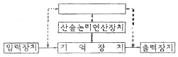
- 마이크로프로세서(microprocessor)
- 제어장치(control unit)
- 보조기억장치(auxiliary memory)
- 인터페이스(interface)
(정답률: 알수없음)
64. 선형리스트 중 마지막으로 입력한 자료가 제일 먼저 출력되는 LIFO(Last in first out) 구조는?
- 트리
- 스택
- 큐
- 섹터
(정답률: 알수없음)
65. 운영체제(OS)의 목적과 관계가 먼 것은?
- 처리능력의 증대
- 응답시간의 단축
- 신뢰도의 향상
- 응용소프트웨어의 개발
(정답률: 알수없음)
66. 전자계산기의 기본 논리회로는 조합논리회로와 순서논리회로로 구분된다. 이중 조합논리 회로에 해당되는 것은?
- RAM
- 2진 다운카운터
- 반가산기
- 2진 업카운터
(정답률: 알수없음)
67. 다음 오퍼랜드 어드레스방식 중에서 기억장치를 두 번 읽어야 원하는 데이터를 얻을 수 있는 방식은?
- 간접어드레스지정방식
- 직접어드레스지정방식
- 상대어드레스지정방식
- 페이지어드레스방식
(정답률: 알수없음)
68. 전자계산기에서 보수(complement)를 사용하는 이유로 가장 타당한 것은?
- 가산의 결과를 정확하게 얻기 위해
- 감산을 가산의 방법으로 처리하기 위해
- 승산의 연산과정을 간단히 하기 위해
- 제산의 불필요한 과정을 생략하기 위해
(정답률: 알수없음)
69. 다음의 time chart에 해당하는 것은 어느 Gate인가?
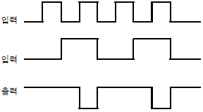
- AND
- OR
- NAND
- NOR
(정답률: 알수없음)
70. 어떠한 명령(instruction)이 수행되기 위해서 가장 먼저 이루어져야 하는 마이크로 오퍼레이션은 무엇인가?
- PC ← MAR
- PC ← PC+1
- MAR ← PC
- MBR ← IR
(정답률: 알수없음)
71. 다음 중 방송법의 궁극적인 목적은?
- 문화창달의 공헌 기여
- 공공복리의 증진 기여
- 방송ㆍ언론의 신장 기여
- 방송ㆍ통신기술의 발전 기여
(정답률: 알수없음)
72. 다음 중 종합유선방송국의 하향 음악방송대역은?
- 88[MHz] ~ 108[MHz]
- 120[MHz] ~ 140[MHz]
- 54[MHz] ~ 60[MHz]
- 60[MHz] ~ 66[MHz]
(정답률: 알수없음)
73. 종합유선방송국 시설 중 주전송장치에 영상신호와 음성신호의 특성으로 적합하지 않은 것은?
- 영상신호 기저대역 주파수는 4.2MHz 범위 이내
- 음성신호 기저대역 주파수는 50Hz ~ 15kHz 범위 이내
- 영상신호 출력임피던스는 600Ω 불평형
- 음성신호 출력임피던스는 600Ω 평형
(정답률: 알수없음)
74. 정보통신공사업의 등록기준에 속하지 않는 것은?
- 기술능력
- 자본금
- 감리자격
- 기타 필요한 사항
(정답률: 알수없음)
75. 방송위원회는 방송기술 및 시설에 관한 심의ㆍ의결사항에 대하여 어느 기관의 의견을 들어야 하는가?
- 국정홍보처
- 문화관광부
- 정보통신부
- 공정거래위원회
(정답률: 알수없음)
76. 정보통신부공사 가운데 경미한 공사에 해당하는 것은?
- 간이무선국의 무선설비설치공사
- 전파관계법에 의한 통신설비공사
- 방송법에 의한 방송설비공사
- 교환설비공사
(정답률: 알수없음)
77. 다음 중 방송국의 개설조건이 아닌 것은?
- 방송국을 개설하고자 하는 자는 다른 방송의 수신에 혼신을 일으키지 아니하도록 이를 설치하여야 한다.
- 혼신의 방지를 위한 방송국의 설치장소 등 방송국의 개설조건에 관하여 필요한 사항은 대통령령으로 정한다.
- 정보통신부장관은 방송국을 개설하고자 하는 자의 허가 신청 내용이 개설조건에 적합하지 아니한 때에는 설치장소의 이전 등 보환을 명할 수 있다.
- 송신공중선의 출력 및 지향특성 등 방송국의 개설조건에 관하여 필요한 사항은 정보통신부령으로 정한다.
(정답률: 알수없음)
78. 디지털 텔레비전 방송에서 프로그램채널에 관한 설명으로 적합하지 않는 것은?
- 프로그램채널은 방송 서비스채널과 데이터 서비스 채널이 있다.
- 방송서비스채널은 영상, 음성 및 보조 데이터로 구성된다.
- 데이터서비스채널은 단일 스트림으로 구성된다.
- 프로그램채널은 아날로그 방송신호로만 구성된다.
(정답률: 알수없음)
79. 방송사업의 허가ㆍ승인ㆍ등록의 취소에 관한 내용으로 틀린 것은? (복원 오류로 보기 내용이 정확하지 않습니다. 내용을 아시는분께서는 오류 신고를 통하여 내용 작성부탁 드립니다. 정답은 3번입니다.)
- 허위 기타 부정한 방법으로 허가ㆍ승인을 얻거나 등록을 한 경우 에는 취소할 수 있다.
- 허가ㆍ승인ㆍ등록의 취소가 있을 경우 서면으로 통지해야 한다.
- 문화관광부장관이 방송위원회의 승인을 얻어야 취소할 수 있다.
- (복원중)
(정답률: 알수없음)
80. 한국방송공사 이사회의 기능에서 심의ㆍ의결 사항이 아닌 것은?
- 각 방송국의 공사계획 및 시공감리에 관한 사항
- 공사가 행하는 방송의 공적 책임에 과한 사항
- 지역방송국의 설치 및 폐지에 관한 사항
- 공사가 행하는 방송의 기본운영계획에 관한 사항
(정답률: 알수없음)